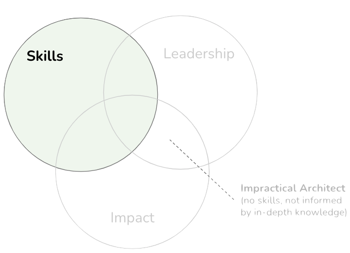

Building Skills
IN THIS SECTION, YOU WILL: Understand that architects’ skills should include a mix of technical, communication, product development, and business skills, and get valuable pointers to resources for developing these skills.
KEY POINTS:
- An architect’s typical skillset includes hard (technical) skills, soft (people & social) skills, product development, business skills, and decision-making skills.
- Hard (technical) skills are essential for designing, implementing, and maintaining an organization’s technology landscape.
- Soft skills are integral to social architecture, enabling individuals to navigate and contribute to these social systems effectively.
- Product development knowledge is the bridge that helps architects align technical solutions with customer needs and business objectives.
- Business domain knowledge is not just useful but essential for architects to create solutions that deliver real value.
- Decision-making skills ensure that architectural decisions are sound, sustainable, and aligned with long-term strategic objectives.
Simply knowing things isn’t enough. With just an internet connection, you can find information easily. What really counts is knowing how to apply that knowledge when faced with challenges—when requirements conflict, teams disagree, and ambitions clash with constraints. This is where architects step in (Figure 1).
 Figure 1: Skills play a crucial role in architectural effectiveness, alongside impact and leadership. Without them, architectural decisions can easily veer into impracticality.
Skills That Make Architecture Work
To truly succeed, IT architects need more than just technical know-how; they have to be able to connect systems, people, and business contexts into something cohesive and valuable.
Let’s break it down.
Technical Skills: The Foundation
Good architecture starts with a strong technical foundation. You can’t effectively guide others through a system you don’t understand. This means being fluent in:
- Modern infrastructure—think cloud platforms, containers, and orchestration tools.
- Legacy systems—because systems are built on what already exists.
- Languages, patterns, and frameworks—these are your essential tools for design and development.
But it’s not just about being the smartest person in the room. It’s about having enough knowledge to make pragmatic, scalable decisions, and enough breadth to communicate effectively with different teams without losing credibility.
Great architects don’t just read whitepapers; they write code, debug systems, and focus on long-term sustainability, rather than just short-term fixes.
Communication Skills: The Connector
If technical skills are the groundwork, communication is the bridge. Architects often interact with various groups: developers, product managers, executives, and even customers. Each audience has its own way of communicating, so architects must be able to switch gears—not just in language but also in thinking.
This involves:
- Breaking down complex ideas into straightforward, compelling messages.
- Actively listening—truly grasping people’s concerns and feedback.
- Adjusting tone and medium based on who you’re talking to.
When done right, effective communication aligns teams, reduces misunderstandings, and builds trust—a crucial asset that amplifies your influence.
Influence Skills: Leading Without Authority
One thing that isn’t discussed much early on is that architects don’t usually have formal power. They can’t force a team to adopt a design or mandate changes (that is, if they want those changes to stick).
Instead, architects learn to lead through influence. This means:
- Gaining credibility through consistent and sound judgment.
- Fostering alignment between teams, even when it’s tough.
- Supporting good ideas—even if they’re not the most popular.
Influence isn’t about being the loudest; it’s about being the most respected, most steady, and most constructive voice in the room.
Product Development: Thinking Beyond Technology
Technical excellence alone won’t get you far—it’s about delivering products that provide value. So architects must know how product development works—how features are defined, how customers use them, and how success is measured.
This requires:
- Understanding Agile, Lean, and other product-focused methodologies.
- Collaborating regularly with product managers and UX designers.
- Focusing on outcomes that are feasible, valuable, and usable.
The best architects don’t just create systems; they help build products that users want and that the business can sustain.
Business Domain Knowledge: Grounding the Architecture
Context is key. A payment system differs drastically from a media platform, and a hospital EMR isn’t the same as a social network. Architects who grasp the business domain—its drivers, constraints, and opportunities—tend to design much better systems.
This means:
- Understanding the regulatory landscape and operational realities of the industry.
- Staying updated on competitive trends and challenges.
- Linking technical initiatives to broader business goals.
Without this context, architectural decisions can risk becoming ungrounded—technically solid but lacking strategic relevance.
Decision-Making: Navigating the Grey Areas
At its core, architecture is about making decisions under uncertainty. Every choice has real consequences. Each abstraction, interface, and constraint you introduce has lasting effects.
Effective architects:
- Navigate competing trade-offs (cost, time, risk, complexity).
- Make choices in ambiguous situations, even with imperfect data.
- Keep a long-term vision in mind while also making meaningful progress.
The goal isn’t to achieve perfection; it’s about making progress with integrity.
The Balanced Profile
Let’s be real: nobody is great at everything. Architects are just like everyone else—some are more technical, while others are gifted at connecting with people. What really sets the great ones apart is that they understand their strengths and where they could use a little help. They’re always working towards finding that balance.
At the end of the day, architecture isn’t something you do alone. It’s all about teamwork, staying aware of your surroundings, and handling high-pressure situations together. The architects who truly succeed are the ones who don’t just focus on building systems but also on building relationships—linking technology with people and a sense of purpose.
Building Technical Skills
Technical skills, also known as hard skills, are the foundational abilities that architects need to design, implement, and maintain an organization’s technology landscape. These skills allow architects to develop robust, scalable, and maintainable systems that support business goals while ensuring performance, security, and long-term adaptability.
Below are some essential technical skills that architects must master to be effective in their roles:
System Design
The ability to design complex systems from the ground up is fundamental. Architects should be able to envision and structure systems that balance functionality, performance, and maintainability. Strong system design skills ensure that architecture aligns with strategic objectives and scales with business growth.
Engineering Processes
Architects must understand modern engineering practices, such as:
- Agile methodologies
- DevOps and CI/CD pipelines
- Software development lifecycle (SDLC) best practices
These skills ensure that systems are built efficiently and integrated seamlessly into existing workflows.
Design Patterns and Tactics
Familiarity with proven architectural patterns—such as MVC, SOA, microservices, and cloud-native design—enables architects to:
- Solve recurring design problems
- Promote modularity and reuse
- Ensure scalability and maintainability
Architects must also understand design tactics for addressing quality attributes such as availability, performance, and modifiability.
Security and Privacy by Design
Security must be embedded in the design process, not merely added later. Architects need to:
- Integrate security practices early in the design phase
- Address privacy concerns
- Ensure compliance with regulatory standards
A proactive approach to threat modeling, encryption, and data governance is essential.
System Optimization
Performance and scalability should not be afterthoughts. Architects should:
- Identify bottlenecks using profiling and monitoring tools
- Apply tuning techniques to enhance system throughput
- Design for elasticity and graceful degradation
These skills help create systems that perform well under real-world conditions.
Source Code Structure & Maintainability
Architects must advocate for clean, maintainable code by:
- Promoting clear module boundaries and sensible abstractions
- Encouraging practices like refactoring, documentation, and code reviews
- Reducing technical debt over time
Good code structure lays the groundwork for long-term sustainability.
Reliability and Stability Patterns and Tactics
Architects must design systems with failure in mind. This means:
- Anticipating and addressing common failure scenarios
- Implementing redundancy, circuit breakers, and failover mechanisms
- Ensuring graceful degradation to protect user experience
These patterns and tactics are essential for building resilient systems.
Usability
While not always the focus for backend architects, usability principles are crucial when designing systems that:
- Support internal tools or platforms
- Interface with end-users or customers
- Influence adoption and efficiency
Architects should collaborate with product and UX teams to ensure systems are intuitive, accessible, and supportive of real-world tasks.
Evolving Your Technical Skills
Technology evolves rapidly, and architects must evolve with it. Ongoing learning is essential—whether through hands-on experience, formal education, mentoring, or curated resources.
For further reading and recommended tools to build these skills, please refer to the Appendix.
Developing Soft Skills
“To change the architecture of a software-intensive system embedded in a large organization, you often have to change the architecture of the organization itself. Ultimately, that is a political problem, not just a technical one.”
— Grady Booch
Soft skills—often referred to as interpersonal, emotional, or behavioral skills—are essential to effective architectural practice. They are a core component of what we call social architecture: the art of shaping relationships, influencing others, and fostering organizational alignment. Technical systems exist within social systems, and to design and evolve one, you often need to navigate and reshape the other.
Communication Skills
Clear and adaptable communication is vital for architectural influence. Architects must:
- Write clearly and persuasively (written),
- Visualize ideas effectively through diagrams and presentations (visual),
- Speak with clarity and confidence (verbal communication),
- Listen actively to understand, not just to respond.
These skills help bridge gaps between teams, align stakeholders, and reduce misunderstandings that can derail initiatives.
Networking & Collaboration
Architects rarely succeed in isolation. Their impact depends on strong relationships across both technical and non-technical domains. Key skills include:
- Building a broad, cross-functional network,
- Partnering across all levels—from engineers to executives,
- Facilitating collaboration in diverse teams with varying perspectives.
Networking opens doors, while collaboration keeps them open.
Organizational & Time Management Skills
Given their high levels of responsibility and often competing demands, architects must:
- Prioritize effectively,
- Set and manage realistic goals,
- Delegate tasks where appropriate,
- Stay organized across complex, multi-team engagements.
Strong organizational skills lead to better outcomes, reduced stress, and sustained effectiveness over time.
Strategy & Problem Solving
Architects operate in complex environments. Their decisions must be informed, strategic, and forward-looking. Key skills include:
- Breaking down complex problems and identifying root causes,
- Evaluating options and understanding long-term trade-offs,
- Driving solutions that are both technically feasible and aligned with business objectives.
Great architects combine analytical rigor with creative problem-solving, spotting patterns that others miss and shaping paths that others haven’t yet imagined.
The Value of Soft Skills in Architecture
Soft skills are what transform knowledge into meaningful impact. They enable architects to:
- Influence without authority,
- Facilitate alignment between teams and departments,
- Build credibility, trust, and consensus across organizational silos.
They also foster environments where innovation, collaboration, and resilience can thrive—hallmarks of high-performing organizations.
Developing these skills isn’t optional; it’s a vital aspect of becoming a truly effective architect.
For additional resources on building these competencies, see the Appendix.
Product Development Skills
Product development is the comprehensive process of transforming an idea into a successful market offering. It includes everything from ideation and design to validation, launch, and post-release refinement. For product-led organizations, the product serves as the engine of growth, with all strategies focused on delivering value through it.
Architects play a crucial role in ensuring that the technical foundation supports the product’s success. Understanding the product development lifecycle enables architects to work more effectively with product managers, designers, and other stakeholders, ensuring that technical decisions align with customer and business goals.
Key Stages of Product Development
Here are the primary stages involved in developing successful products and their significance for architects:
Idea Generation
New product ideas often emerge from customer feedback, market research, internal brainstorming, and emerging technologies. This creative phase requires open-mindedness and a willingness to challenge assumptions.
Why it matters: Architects can support this phase by providing insights on technical feasibility early on, preventing unrealistic ideas from progressing too far down the pipeline.
Market Research
This stage involves assessing customer needs, competitive positioning, and potential market fit, ensuring that the product addresses the right problem for the right audience.
Why it matters: Architects gain valuable context here, which enables them to design solutions that are not only technically sound but also commercially relevant.
Product Design and Development
Translating validated ideas into tangible products involves collaboration between design, engineering, and architecture. Prototypes are created, tested, and refined.
Why it matters: Architects are key in defining system boundaries, selecting technologies, and ensuring that design decisions scale and integrate well with the broader ecosystem.
Testing and Validation
The product is tested for functionality, usability, and performance. User feedback is collected and utilized to improve the solution before launch.
Why it matters: Architects help define testability criteria, establish performance baselines, and ensure that systems are resilient and observable.
Marketing and Launch
A successful launch includes branding, pricing, promotion, and distribution plans. Timing and positioning are crucial.
Why it matters: Architects can assist in preparing for potential traffic surges, integrating with marketing platforms, and ensuring infrastructure readiness.
Post-Launch Evaluation and Iteration
After release, the product is monitored for performance, adoption, and user feedback. Iterations and updates are implemented to enhance functionality or address issues.
Why it matters: Architects contribute to developing systems that are easy to evolve and monitor, enabling continuous improvement without compromising stability.
Why Product Development Skills Matter for Architects
Modern architects do not work in isolation; they function within product ecosystems. Understanding the full lifecycle of product development allows architects to:
- Collaborate more effectively across functions,
- Anticipate business trade-offs,
- Ensure their designs are not only technically sound but also strategically aligned,
- Influence roadmaps by highlighting opportunities and constraints early on.
Ultimately, architects who understand the product mindset help create solutions that are desirable, viable, and feasible—the cornerstone of successful product delivery.
For resources to enhance your product development skills, see the Appendix.
Business Skills
Regardless of their technical depth or design expertise, architects must understand how businesses operate. Their ability to make meaningful contributions relies not only on system architecture but also on understanding how technology decisions support strategic goals.
Great architecture is not just technically sound; it is also aligned with business value.
Core Business Skills for Architects
Here are the essential business-related competencies that architects must develop to be effective collaborators and decision-makers:
General Business Knowledge
Architects benefit from a solid understanding of foundational business concepts, including:
- Finance and budgeting
- Marketing and sales dynamics
- Operations and supply chains
- Strategic planning
Understanding these domains helps architects see the big picture and communicate more effectively with stakeholders across the organization. A great resource to start with is The Personal MBA—a highly accessible guide to essential business thinking.
Specific Business Domain Expertise
Beyond general knowledge, architects should immerse themselves in the specific domain their organization operates in—whether it’s healthcare, finance, manufacturing, retail, or education. This includes knowledge of:
- Industry regulations
- Market trends
- Competitive forces
- Customer expectations
Domain expertise enables architects to design systems that solve the right problems and support key business priorities with precision.
Business Analysis & Requirements Gathering
Effective architects must be skilled at:
- Interpreting business needs
- Facilitating workshops and stakeholder interviews
- Translating business goals into clear, actionable technical requirements
Techniques like SWOT analysis, value stream mapping, and the business model canvas can help frame problems and identify high-value opportunities.
Stakeholder Management
Architects frequently act as a bridge between technical and non-technical stakeholders. This requires:
- Building trust with executives and managers
- Understanding stakeholder concerns
- Navigating competing priorities with empathy and clarity
Strong relationships with stakeholders help architects gain buy-in and drive alignment.
Project Management Awareness
While architects aren’t always project managers, understanding project management fundamentals—such as scope, time, cost, and risk—helps them:
- Communicate more effectively with project leads
- Contribute to realistic planning
- Ensure that architectural decisions support deliverability
Familiarity with agile and hybrid methodologies is especially valuable.
Financial Acumen
Architects should be knowledgeable about key financial concepts, including:
- Budgeting and forecasting
- ROI (Return on Investment)
- TCO (Total Cost of Ownership)
- EBITDA and other financial KPIs
This knowledge allows architects to evaluate solutions not just for technical merit but also for economic impact—a crucial skill in resource-constrained environments.
Strategic Thinking
Architects must understand how their work fits into the long-term business vision. This includes:
- Identifying innovation opportunities
- Aligning architectural decisions with growth objectives
- Recognizing technology’s role in competitive differentiation
Strategic architects help guide the organization rather than simply serve it.
Change Management
Architectural changes often trigger organizational changes. Architects should be familiar with:
- Change readiness assessments
- Communication planning
- Resistance management strategies
These skills support smooth transitions when introducing new platforms, tools, or structures.
The Value of Business Fluency in Architecture
Architects who understand the business landscape can:
- Speak the language of executives
- Align systems with strategic priorities
- Anticipate risks beyond the technical domain
- Influence high-level decisions
This business-savvy mindset transforms architects from technical advisors into strategic partners, enabling organizations to realize the full value of their technology investments.
For further reading and training materials, see the Appendix.
Decision-Making Skills
In architecture, decision-making is a core function, not a secondary responsibility. Strategic decisions shape organizations, and architects who are not involved in these decisions will have limited influence and impact.
Architects play three roles in decision-making:
- Decision-Makers: They own the technical and strategic choices that guide architectural outcomes.
- Advisors: They support others (e.g., engineering leads, executives) in making informed decisions.
- Evaluators: They assess existing decisions to provide feedback or suggest course corrections.
Architects must act as navigators who guide initiatives through uncertainty, risk, and opportunity. Their effectiveness relies on their ability to evaluate trade-offs, balance priorities, and facilitate alignment between technical and business domains.
Core Decision-Making Competencies
Here are essential skills and mental models that architects should cultivate:
Decisions = Irrevocable Resource Allocations
Every decision commits finite resources: time, people, money, infrastructure, and opportunity cost. Architects must make decisions intentionally, understanding the long-term trade-offs and systemic consequences.
Avoid the Outcome Bias
Outcome bias occurs when individuals evaluate decisions based on results rather than the soundness of the decision-making process. Architects need to focus on process quality, not hindsight. A good decision can lead to a bad outcome—and vice versa.
Know When to Trust Intuition
Not all decisions require exhaustive analysis. In ambiguous or fast-moving contexts, intuition shaped by experience can be valuable. Architects should recognize when it’s appropriate to trust their instincts—and when it is not.
“No Decision” Is Still a Decision
Deferring a choice is itself a decision, with associated opportunity costs. Architects must understand that inaction creates risks, often more significant than committing to an imperfect path and adjusting later.
Risk Assessment
Architects must identify and evaluate:
- Technical risks
- Business impact risks
- Organizational risks
Balancing innovation with resilience is crucial for making well-rounded decisions.
Collaborative Decision-Making
Involve the right people. Architects should:
- Seek diverse input.
- Facilitate consensus when needed.
- Clarify accountability and ownership.
Collaborative decisions garner more support and reduce resistance.
Ethical Considerations
All architectural decisions have consequences—for users, employees, and ecosystems. Architects should weigh:
- Privacy and security
- Accessibility
- Long-term societal impact
Doing the right thing is just as critical as doing things efficiently.
Adaptability & Reversibility
Good architects know when to hold firm and when to change direction. Utilize reversible decisions for experimentation and commit deeply only when the path is clear. Design systems—and strategies—that leave room to pivot.
Leverage Decision Intelligence
Decision intelligence integrates data, models, and human judgment, enabling architects to move from “best guesses” to evidence-based actions through:
- Metrics
- Forecasting
- Scenario planning
- Feedback loops
Architects as Strategic Guides
Mastering decision-making transforms architects into trusted strategic advisors. This enhances their ability to:
- Champion scalable, value-aligned solutions.
- Influence roadmaps and leadership thinking.
- Protect the organization from short-sighted or reactive choices.
Ultimately, great architecture is the byproduct of great decisions—rooted in context, guided by insight, and implemented with clarity.
Integrating Skills for Success
To make a real impact, architects need to bring together a variety of skills in a cohesive and strategic manner. It’s not just about being brilliant on the technical side or having top-notch communication skills; the magic happens when you blend technical expertise, interpersonal skills, and strategic thinking.
Another key aspect is having a mindset of lifelong learning. In our fast-paced world, staying static just won’t cut it. The best architects are those who adapt and grow, keeping up with new challenges and trends. They aren’t just experts; they’re innovative thinkers who evolve along with the systems and the people they work with.
So, how do all these skills play out in real life? Let’s break it down:
- Technical Proficiency: This is what lets architects create solid, scalable, and future-ready systems.
- Effective Communication: It’s crucial that everyone—whether they’re tech-savvy or not—understands the architect’s vision.
- Influence and Persuasion: These skills are key to getting everyone on the same page and moving architectural initiatives forward.
- Product Insight: This helps connect the dots between technical solutions and what real customers actually need, ensuring they’re relevant in the market.
- Business Understanding: Architects need to tie their decisions back to what the organization is ultimately trying to achieve.
- Decisive Leadership: When challenges arise, strong architects know how to navigate uncertainty and conflicting priorities with confidence.
By weaving these capabilities together, architects become strategic connectors. They can seamlessly operate at the intersection of business goals, user needs, and technical realities. This balanced skill set not only boosts their effectiveness but also transforms them into trusted leaders. They guide organizations through complex challenges with clarity, cohesion, and a real sense of impact.
To Probe Further
- Appendix: Bookshelf
- Old Books that Every Architect Should Read, by Gregor Hohpe, 2024
- Back from the engine room, by Gregor Hohpe, 2023
- Debugging Architects, by Gregor Hohpe, 2021
Questions to Consider
- On a scale from 1 to 10, how would you rate your current architectural skill sets, considering technical, communication, product, business skills, and decision-making skills?
- Reflect on your technical skills. How proficient are you in system design, understanding engineering processes, recognizing design patterns and tactics, ensuring security and privacy, optimizing systems, and maintaining code structures?
- Do you need to develop specific hard skills to enhance your architectural performance?
- How effectively do you communicate (in writing, visually, verbally, and through listening)? How strong are your networking and collaboration skills, and how well do you manage your time and organizational tasks?
- Can you identify an instance where your problem-solving skills and strategic thinking have significantly influenced your work as an architect?
- Looking at business skills, how well do you understand general business concepts, and how familiar are you with the specific business domain of your organization?
- How competent are you in business analysis and requirements gathering? Can you share an example where you effectively translated business objectives into functional and technical specifications?
- Are there any soft or business skills you need to develop or improve to succeed in your role as an architect?
- Reflect on how you have used your soft skills to effect organizational change. Are there areas or situations where you could have applied these skills more effectively?
- How do you balance developing and maintaining your hard, soft, and business skills? Is there a particular area you tend to focus on more, and why?
On Being Architect |
|||
| ← | → | ||